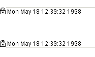

Grouping and Protecting Information with Areas |
You can use areas to protect, lock, or hide information or equations in your worksheets. To insert an area:
Click or right-click near the region(s) you want to protect.
Choose Area from the Insert menu. Two area boundaries appear:
Select and drag these boundaries if necessary to make the area larger or smaller. You can drag them to surround existing regions or create new regions between the boundaries.
Right-click on one of the area boundaries and choose Properties to set the display of an area. You can change the appearance of area boundaries, add a name, timestamp, and other formatting using the Area tab from the Properties dialog. If you uncheck all the boxes the area will be totally hidden.
| Collapsing an Area |
After inserting an area, you can collapse it to hide the regions inside. Any equations in the collapsed area will continue to calculate in sequence. Collapsed areas can make your documents more readable, or protect calculations. To collapse an area:
Right-click on one of the area boundaries.
Choose Collapse from the menu. The area boundaries and the regions between them collapse into a single bar. Regions below the collapsed area move up as necessary.
You can select and drag the collapsed bar or change its formatting, just as you would with an expanded area. To view regions in a collapsed area:
Right-click the collapsed area bar.
Choose Expand.
You can mark collapsed areas by selecting one of the area boundaries, then right-clicking on it and choose Properties. Check Highlight Region, then when you collapse the region, the collapsed area will show as a broad colored band across your page.
| Locking an Area |
You can also protect the contents within the area, so no one else can edit them.
Right-click between the area boundaries, or on an area bar.
Choose Lock from the menu.
Enter a password if you want to further protect the area. Keep in mind that the password is case-sensitive.
Choose whether you want the area to be collapsed, and whether you want the contents to be kept hidden while it is locked.
A padlock appears on the collapsed area bar indicating it is locked:

Note that locking an area is different from protecting a region. Locked areas cannot be edited, although you can choose whether they can be expanded and collapsed while locked, so you can see their content. While you cannot select and edit or copy individual regions in a locked area, you can select, copy, and paste the entire locked area. Click on the top area bar and copy and paste to the new location. The copied version will still be locked. This allows you and others to reuse verified content as required.
Right-click between area boundaries or on an area bar that you want to unlock.
Choose Unlock. If a password is required, you are prompted for the password.
| Deleting an Area |
You can delete an area, whether it is collapsed or not, just as you would any other region. If it is locked, you must unlock it first.
You can have any number of areas in your worksheet, but you cannot have one area inside another.
You can also include definitions and calculations without showing them using a referenced worksheet.
If you save a file as XML, the content within locked and collapsed regions is saved in binary format within the XML file. If you want to expose that content, then unlock and expand it first.